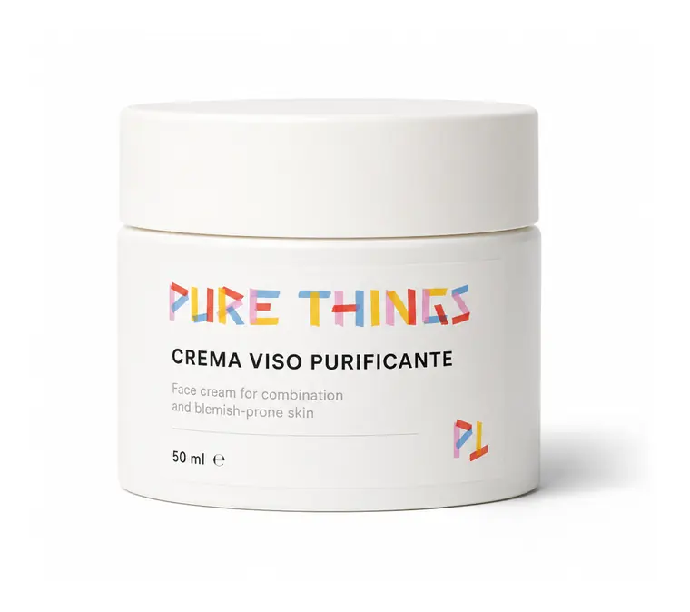
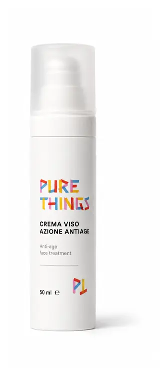
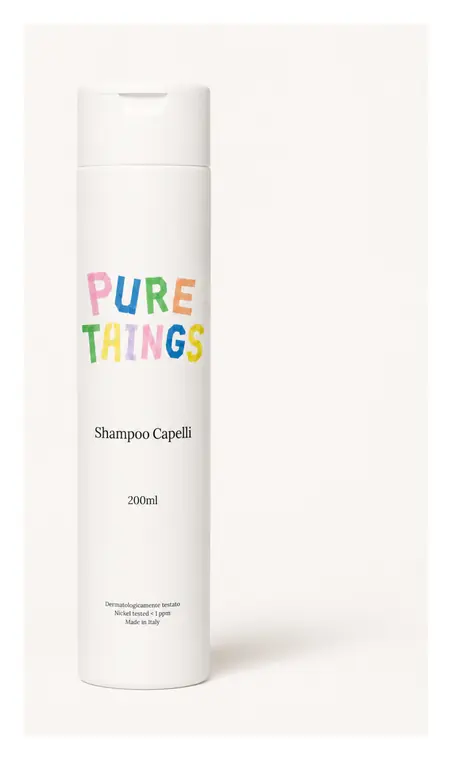
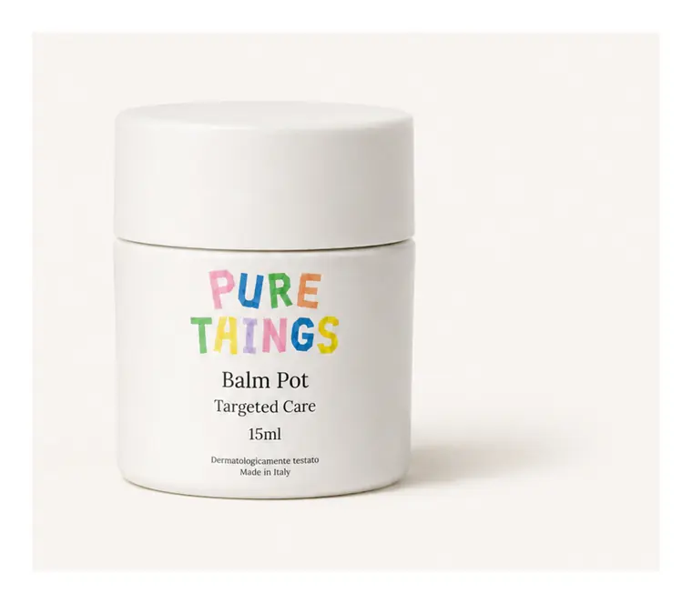

Made in Milan for you
Skincare for real skin moods.
Pure Things is indie beauty for skin that wakes up different every morning. Exact formulas, white packaging, colorful character, and a bathroom shelf that refuses to be boring.




Brand statement
Pure Things turns skincare into a small daily feeling.
Born in Milan, made for the beautifully specific person in the mirror. We create products that are easy to understand, fun to use, and honest about what they do — because your routine should feel like care, not homework.
Indie SEO direction
Searchable, but still alive.
Pure Things is written for people searching for indie skincare from Milan, colorful beauty packaging, clean white-label skincare formulas, playful Italian cosmetics, ingredient-led product pages, and routines that feel less clinical and more human.
Say hello